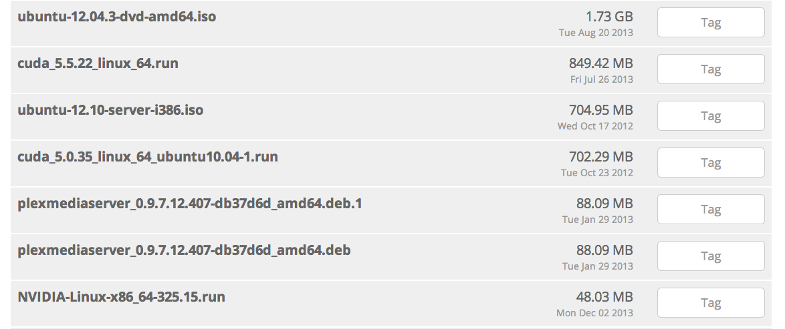
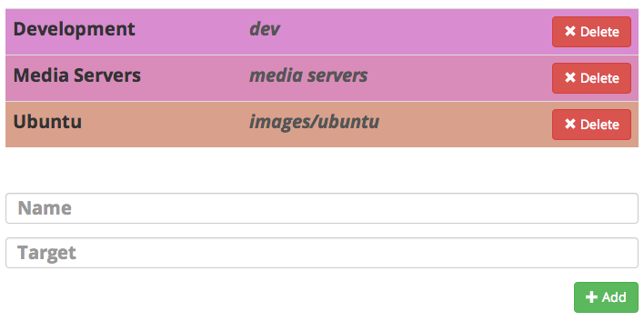
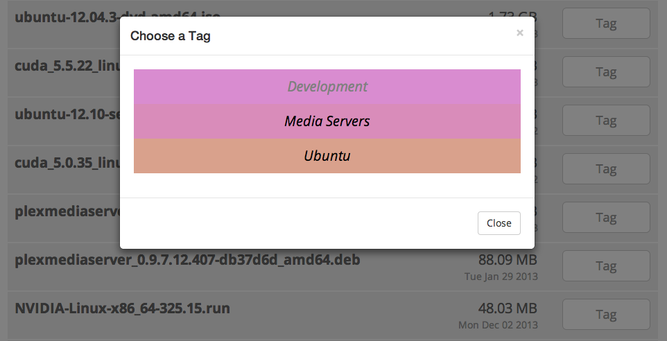
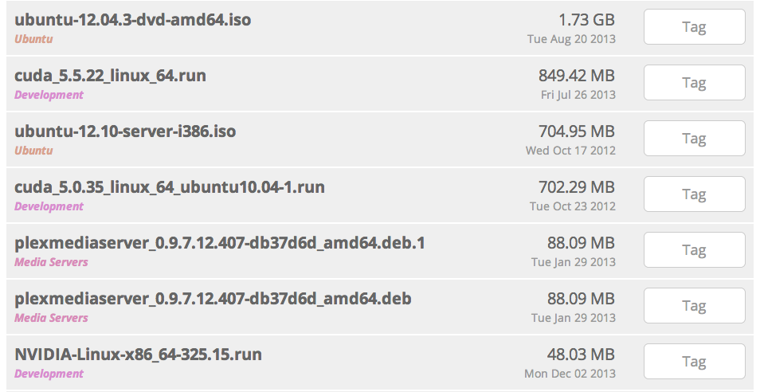
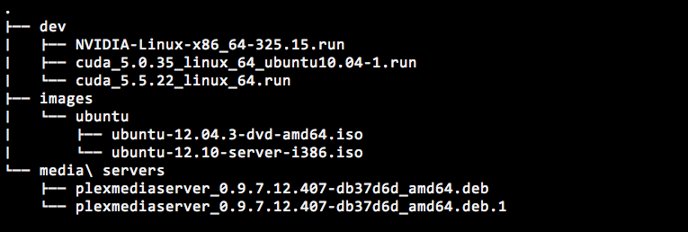
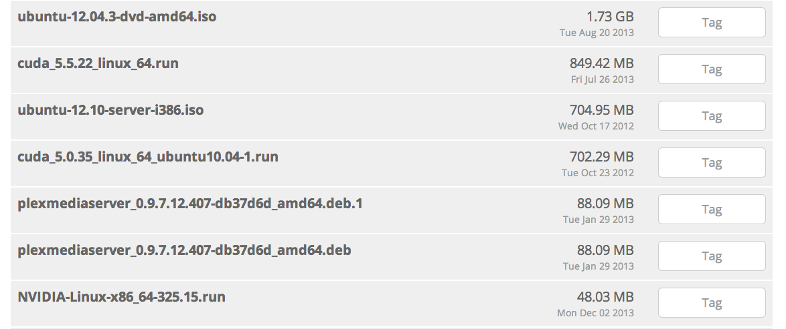
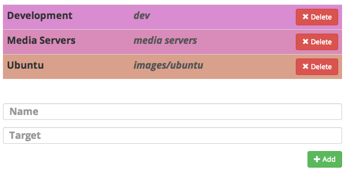
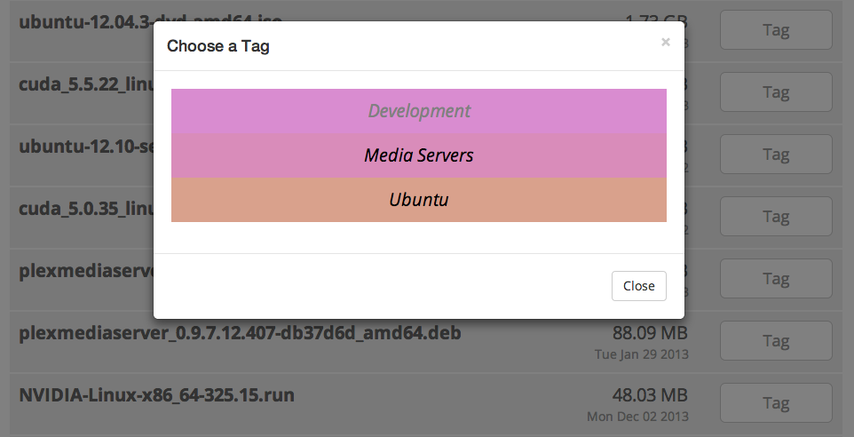
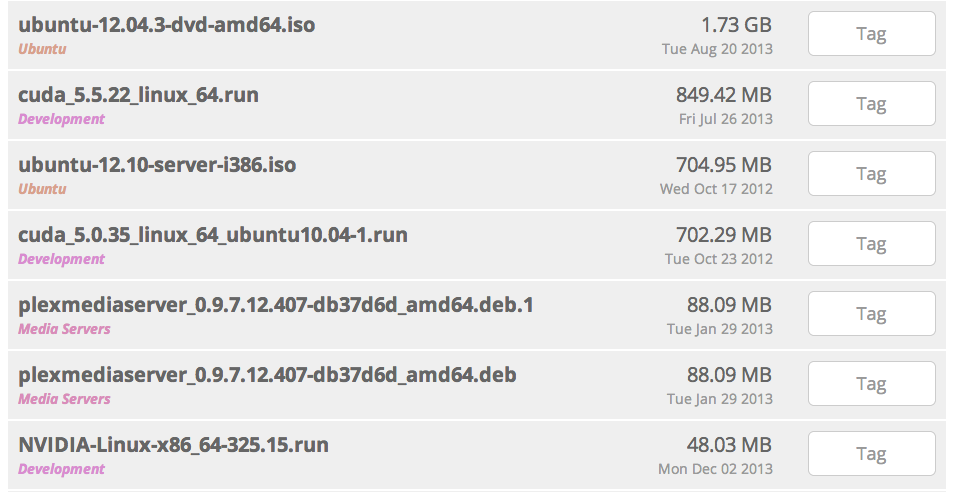
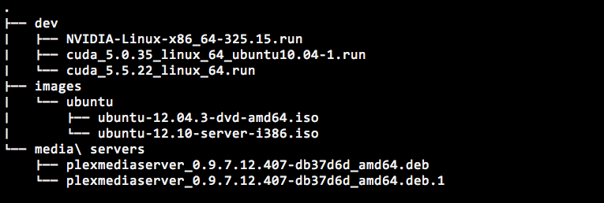

Run dakait on your local server
PORT=4000 java -jar dakait-X.X.X-standalone.jar
Use a web-interface to browse and tag files
   Dakait downloads the files and places them where the tags point
Runs on Mac OS X and Linux
The web-interface works with portable hand-held devices
Run dakait on your local server
Use a web-interface to browse and tag files
   Dakait downloads the files and places them where the tags point
